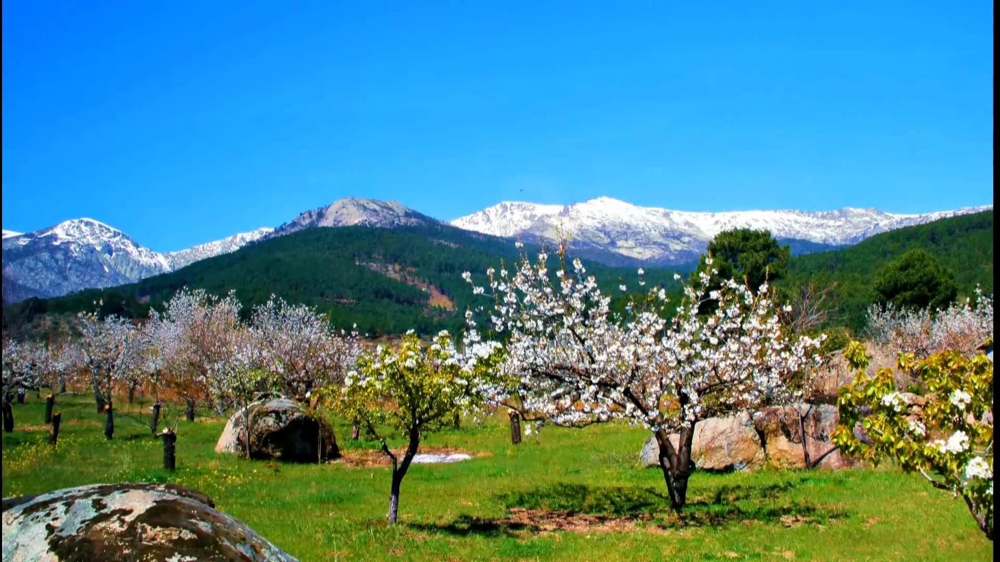
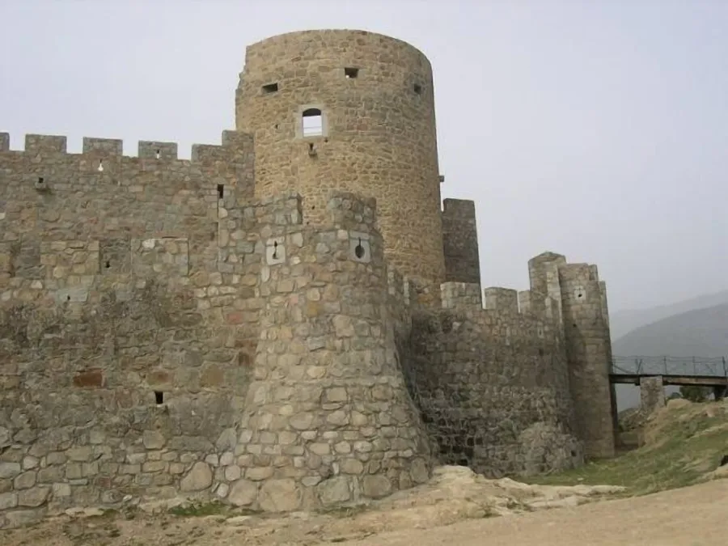
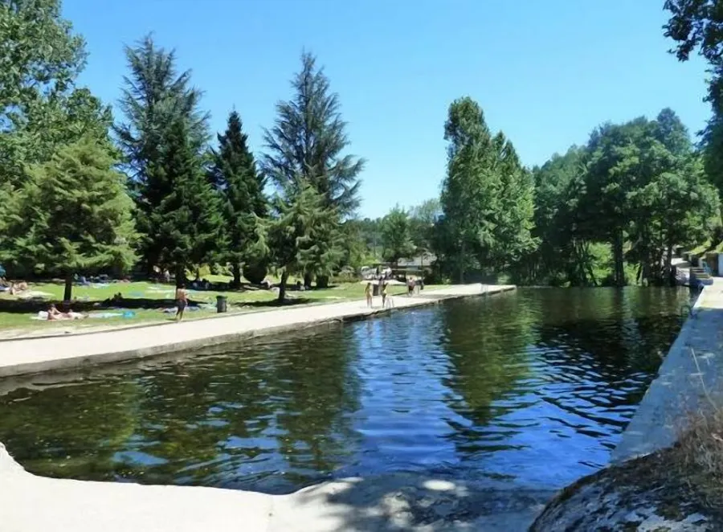

I — Muros
Piedra
Casas de muros de piedra repartidas por la finca, unidas por jardines de agua y piedra: estanques, regatos y fuentes que suenan de fondo todo el día.
6 casas · jardines de agua
Hotel rural · Arenas de San Pedro, Ávila
Seis casas de piedra y madera de castaño en una finca de 14 hectáreas al pie de la sierra. Piscina natural, comida casera y el Almanzor nevado como paisaje.
01 La finca


A 3 km de Arenas de San Pedro y a hora y media de Madrid. Se reserva por habitaciones, para una escapada en pareja, o la finca entera, para familias, retiros y grupos de hasta 30 personas.
Y sí: los perros también vienen.
Entrar en la casade piedra y madera de castaño
en 20 habitaciones con baño
de castaños, robles y frutales
por la A-5 y la N-502
02 La casa
I — Muros
Casas de muros de piedra repartidas por la finca, unidas por jardines de agua y piedra: estanques, regatos y fuentes que suenan de fondo todo el día.
6 casas · jardines de agua
II — Vigas
Techos de madera vista y habitaciones sencillas y cálidas. En cinco de las casas están las habitaciones: diez dobles y diez individuales, todas con su baño y calefacción.
10 dobles · 10 individuales

III — Pozas
Una piscina natural que recrea las pozas de las gargantas de Gredos: depurada con sal marina, sin cloro y oxigenada con cascadas. Para los veranos, con la sierra enfrente.
Sal marina · sin cloro

IV — Mesa
La casa central guarda la cocina, el comedor con chimenea y una sala de trabajo. Comida casera y tradicional; y si alguien tiene una dieta especial, la cocina se adapta.
Comedor con chimenea · sala de 60 m²
03 Qué hacer
La finca se acaba donde empieza la sierra. Esto es lo que hacen nuestros huéspedes entre desayuno y cena.
Y además, en el valle
04 Galería
Arrastra o pulsa una fotoFotos reales de La Lobera y su entorno
★★★★★
“Un lugar precioso en una ubicación fenomenal. Los dueños se preocupan por la comodidad de sus huéspedes. La chef y su equipo adaptan la dieta a las expectativas de sus huéspedes.”
J. W. · agosto 2025 · Google
★★★★★
“Espectacular sitio en la sierra de Gredos, naturaleza pura y mejores vistas.”
Andrés Fernández Moya · junio 2026 · Google
★★★★★
“Una experiencia inolvidable.”
Bernat Vidal · julio 2026 · Google
★★★★★
“Un lugar precioso en una ubicación fenomenal. Los dueños se preocupan por la comodidad de sus huéspedes. La chef y su equipo adaptan la dieta a las expectativas de sus huéspedes.”
J. W. · agosto 2025 · Google
★★★★★
“Espectacular sitio en la sierra de Gredos, naturaleza pura y mejores vistas.”
Andrés Fernández Moya · junio 2026 · Google
★★★★★
“Una experiencia inolvidable.”
Bernat Vidal · julio 2026 · Google
★★★★★
“Un lugar precioso en una ubicación fenomenal. Los dueños se preocupan por la comodidad de sus huéspedes. La chef y su equipo adaptan la dieta a las expectativas de sus huéspedes.”
J. W. · agosto 2025 · Google
★★★★★
“Espectacular sitio en la sierra de Gredos, naturaleza pura y mejores vistas.”
Andrés Fernández Moya · junio 2026 · Google
★★★★★
“Una experiencia inolvidable.”
Bernat Vidal · julio 2026 · Google

El techo del Sistema Central
Almanzor
2.592 m · Sierra de Gredos
06 Alrededor

Castillo, puente medieval y el pueblo de siempre.

Agua limpia entre granito, a un paseo.
2.592 m, la cumbre de Gredos.

En el mismo valle del Tiétar.

80 km a Ávila; hora y media a Madrid.
Paraje La Parrilla s/n · 05400 Arenas de San Pedro (Ávila)
Al llegar a Arenas, cruza el pueblo por la calle principal y, pasado el castillo, toma la carretera de Guisando. A unos doscientos metros verás los indicadores. Son 3 km, unos siete minutos.
Abrir en Google Maps07 Preguntas
¿Algo que no está aquí? Pregúntanos por WhatsApp y te contestamos nosotros, no un formulario.
Preguntar por WhatsApp→Sí. La Lobera se reserva por habitaciones o completa, con 30 plazas: ideal para familias, celebraciones, retiros y grupos.
Sí, las mascotas son bienvenidas. Avísanos al reservar y lo dejamos todo preparado.
Es una piscina natural que recrea las pozas de las gargantas de Gredos, depurada con sal marina, sin cloro y oxigenada con cascadas. Abre en temporada de verano, siempre que el tiempo acompañe.
Sí. En el comedor con chimenea de la casa central se sirve comida casera y tradicional, además del desayuno. Si tienes alguna dieta especial, dínoslo.
Sí. Hay una sala de trabajo de unos 60 m² en la casa central y un domo de 140 m² en el bosque de castaños, para grupos de hasta 50 personas.
En coche, por la A-5 hasta la salida 123 y después unos 45 km por la N-502 hasta Arenas de San Pedro: hora y media o dos horas. También hay autobuses diarios desde la Estación Sur.
Escríbenos por WhatsApp o llama al 670 64 35 21. Te confirmamos disponibilidad y precio para tus fechas.
Atardecer desde La Lobera
Sin intermediarios · te responde la propia casa
Demo preparada por Upscall · fotos y reseñas reales de La Lobera de Gredos